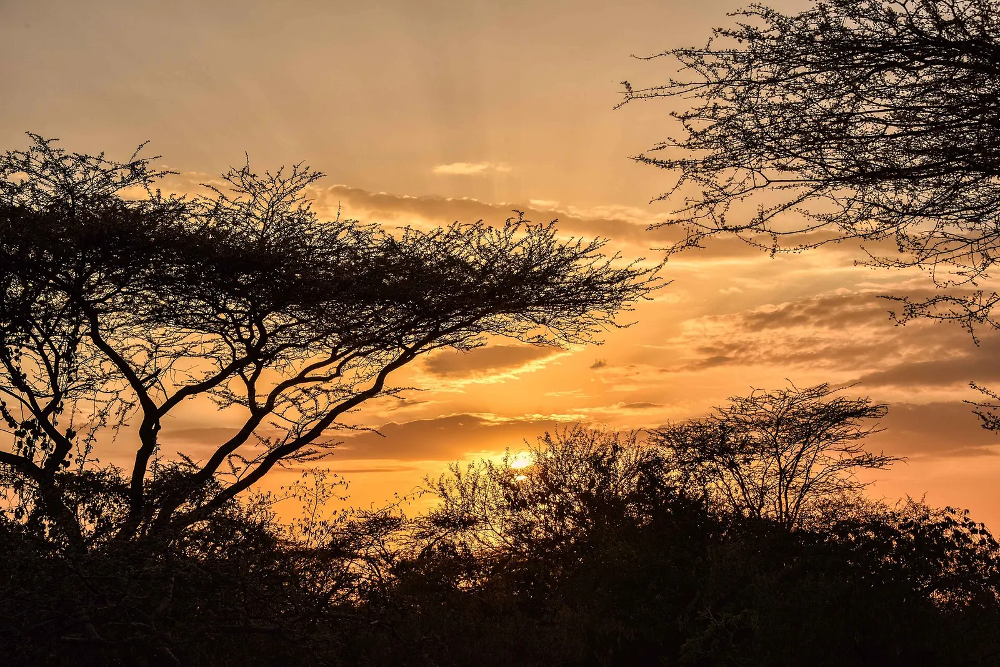
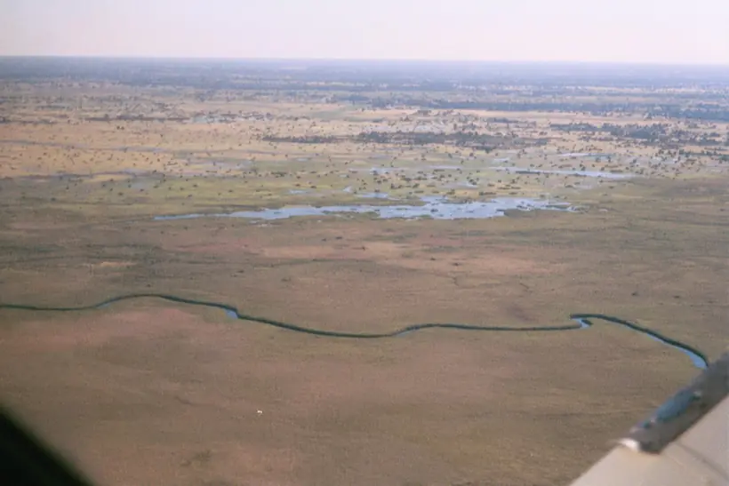
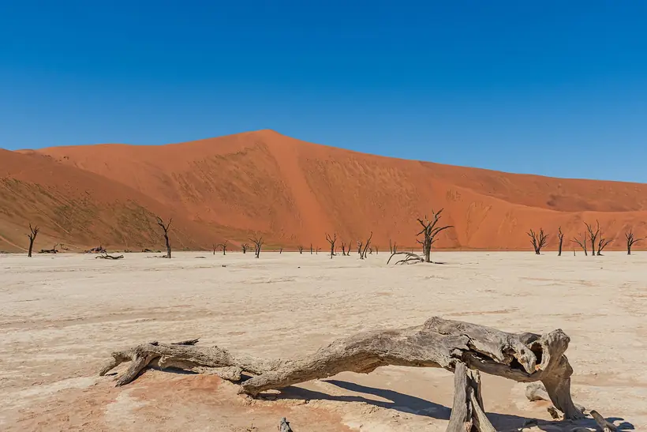
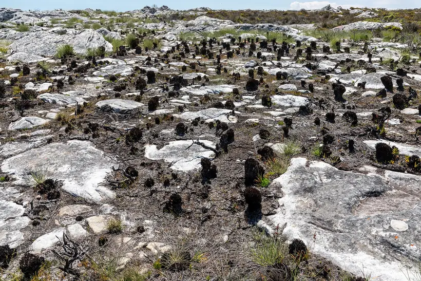
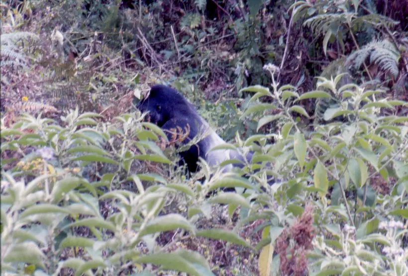
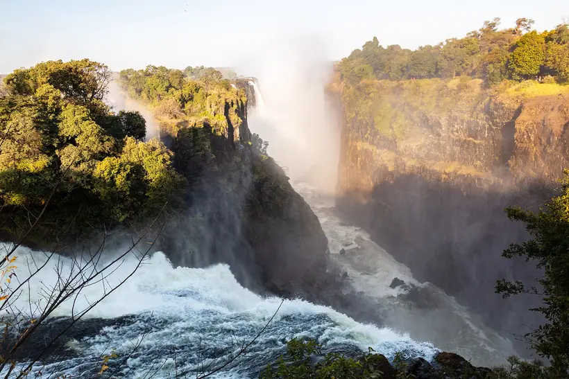
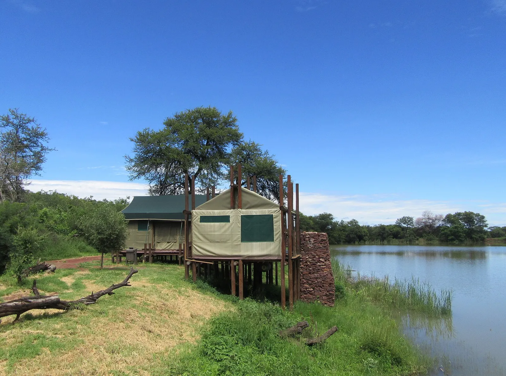
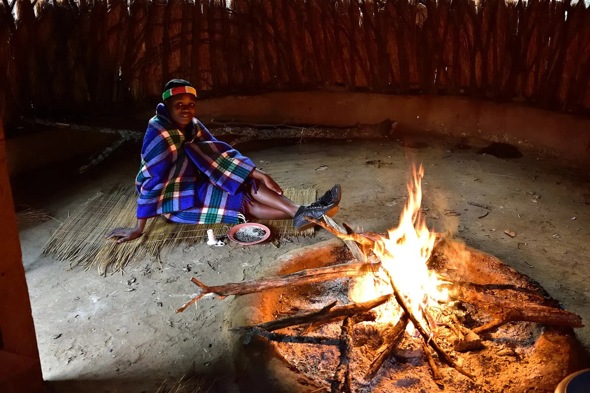

Tanzanie — Serengeti & cratère du Ngorongoro
La Grande Migration
Un million de gnous, deux cent mille zèbres : la migration traverse le Serengeti au rythme des pluies, et ce circuit suit ses dépl…
4 890 ۈ partir de / pers.
Voir le circuit

Agence de safaris & voyages sur mesure — Marseille
Quinze ans de brousse, sept pays, un seul métier : composer des safaris et des voyages de nature sur mesure, avec des équipes qui vivent sur place toute l'année.
Notre métier
Nous dessinons chaque itinéraire à la main, à partir de ce que nous avons vu de nos propres yeux. Chaque voyage est repéré, testé et réajusté année après année : la savane change, les saisons bougent, et personne ne rêve pareil.
Un bon safari n'est pas celui où l'on voit tout, mais celui où l'on comprend ce que l'on voit.
Destinations

L'immense théâtre de la grande migration

Savanes masaï et éléphants sous le Kilimandjaro

Le delta de l'Okavango, joyau d'eau et de sable

Déserts rouges, désolation et grands espaces

Safaris du Kruger et routes côtières spectaculaires

Gorilles des montagnes et mille collines vertes

South Luangwa et les chutes Victoria sauvages
Circuits signature
Quatorze itinéraires dessinés à la main, jour par jour — celui-ci n'est que le point de départ : tout s'ajuste.
Tanzanie — Serengeti & cratère du Ngorongoro
Un million de gnous, deux cent mille zèbres : la migration traverse le Serengeti au rythme des pluies, et ce circuit suit ses dépl…
Botswana — Delta de l'Okavango & Moremi
Le delta de l'Okavango se vit autant sur l'eau que sur terre : navigation en mokoro entre les roseaux, marche sur les îles inondée…
Tanzanie — Arusha, Tarangire, Manyara, Ngorongoro & Serengeti
Le grand classique tanzanien, resserré sur huit jours sans jamais se presser : quatre parcs majeurs reliés par des routes courtes …

Notre histoire
En 2011, Camille Aubertin débarque à Arusha avec un sac à dos de dix-huit kilos et un carnet de croquis. Prévue pour trois semaines, la virée en devient une année : des plaines du Serengeti aux dunes du Namib, elle apprend la savane à l'africaine — à l'oreille, à l'odeur de la poussière après la pluie, au rythme des guides qui savent attendre.
De retour à Marseille, elle ne retrouve pas l'agence qu'elle aurait voulu avoir avant de partir. Alors elle la crée : une petite structure, des conseillers qui ont tous vécu plusieurs années en Afrique, et une obsession — construire chaque voyage comme si c'était le sien.
Lire notre histoire complèteNos engagements
Quatre règles non négociables, appliquées à chaque itinéraire, chaque camp, chaque départ.
Nous choisissons des camps et lodges indépendants qui reversent une part de leurs revenus à la conservation, et nous mesurons la retombée locale de chaque itinéraire. Nos circuits intègrent des concessions communautaires, où les droits de safari financent directement les villages voisins.
Distance réglementaire, moteurs coupés, pas de hors-piste, aucun contact avec les animaux : nos guides suivent une charte stricte, rappelée avant chaque départ. Nous ne programmons aucune activité qui manipule ou nourrit la faune, et nous refusons les parcs à keeping d'animaux.
Guides, pisteurs, cuisiniers, chauffeurs : plus de 90 % de nos équipes sur place sont recrutées et formées localement, en CDI local ou via des coopératives partenaires. Le pourboire est expliqué, jamais imposé, et un fonds d'équipement soutient les équipes entre deux saisons.
Six voyageurs en moyenne, jamais plus de douze. Des véhicules optimisés, des hébergements rationnés en eau et en énergie, des itinéraires qui essaiment plutôt que d'écraser les mêmes points d'eau. Le carbone des vols internes est compensé via un reboisement dans le Kilwa, en Tanzanie.
Pour qui ?
La savane expliquée aux enfants — et aux parents.
Le crépuscule, le feu de camp, personne d'autre.
La lumière d'abord, le reste suivra.
La plus belle des premières nuits de brousse.
Anniversaire, cousinade, pot de départ : la brousse rassemble.
Des séminaires où le réseau se tisse autour du feu.

Sur mesure
Cinq étapes, dix minutes : destination, saison, voyageurs, budget, envies. Un conseiller vous répond sous 48 h avec une première proposition, gratuite et sans engagement.
Avis voyageurs
« Nous avons vécu deux traversées de rivière en trois jours, dont une avec les crocodiles à l'affût, et Badaui savait toujours où se placer sans jamais coller le troupeau. Le camp de Seronera était parfait, l'équipe d'une gentillesse rare. Onze jours sans une fausse note, des petits déjeuners en brousse inoubliables. Je repartirai avec Horizons Sauvages, c'est certain. »
« Trek de deux heures dans la boue et les orties, et puis la famille de gorilles est apparue dans une éclaircie : une heure magique, avec un jeune qui a dormi à trois mètres de nous. Aline et son équipe avaient tout calé au millimètre, du permis au lodge face aux volcans. Le lac Kivu ensuite, parfait pour redescendre. Un voyage que je recommande les yeux fermés. »
« Premier safari pour nous et franchement un sans-faute. Le rythme était parfait, jamais plus de trois heures de route, et notre guide Emmanuel avait une réponse à tout, des oiseaux aux étoiles. Le cratère du Ngorongoro au lever du jour restera le plus beau souvenir de voyage de ma vie. Mention spéciale au lodge de Karatu et à son potager. »
Le journal
Carnet de terrain
Au nord du Serengeti, en août, tout le camp vit au rythme des gnous massés sur la rive sud de la Mara. Récit d'une attente de quatre heures pour trois minutes de chaos absolu.
Lire l'articleSavoir-faire
Boîtiers, lumière, patience et éthique : les conseils concrets d'un photographe qui a passé dix saisons sur les pistes d'Afrique de l'Est et australe. Spoiler : le meilleur accessoire coûte zéro euro.
Lire l'articleCoulisses
Dîner sous les flambeaux, toile qui claque, hippopotames qui braient à trois heures du matin : journal d'une nuit dans un camp sous tente du nord de la Tanzanie. On y apprend que la brousse ne dort jamais.
Lire l'articleHorizons Sauvages
Parlez-nous de votre voyage rêvé — nous le dessinons, vous vivez.